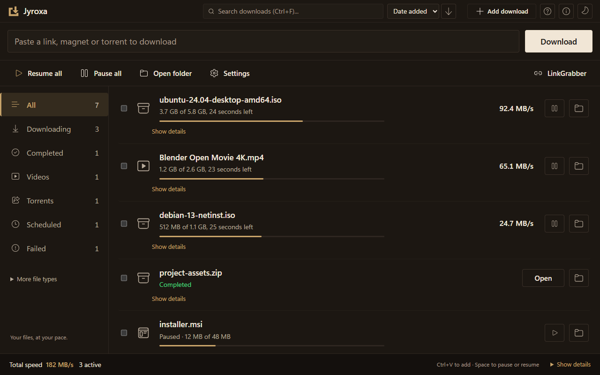
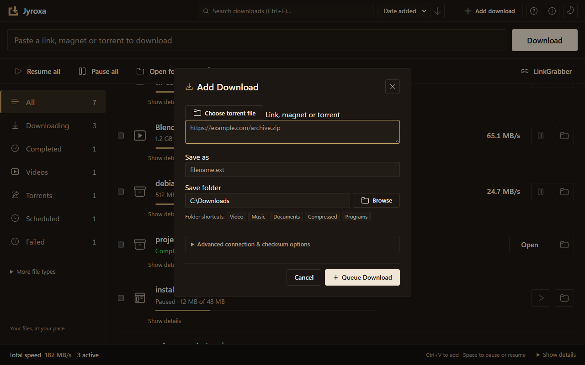

Screenshots
Design v3 previews from the desktop shell (1280×800). Torrent-specific captures are not in this set yet.




Design v3 previews from the desktop shell (1280×800). Torrent-specific captures are not in this set yet.

